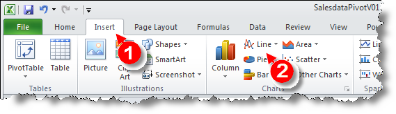

Multi-dimensional Reporting
This lab will continue with Excel’s Pivot table feature for the purpose of doing Online Analytical Processing (OLAP).
It is an easy way to increase insights into data through aggregation. OLAP enables users to analyse different dimensions of multidimensional data. In a multidimensional approach, data is organized into dimensions. A number of multi-dimensional navigational techniques will be introduced, e.g. drill-down, slice and dice. Terminology explained:
Dimension
A dimension is a context, aspect or perspective by which the facts may be described, accessed, grouped, selected, sequenced, filtered and presented. A dimension reflects how business users typically think of the business. For example business users may view their data by product, customers, time etc...
Fact
A fact is measurement/metric, mostly always numeric. Example: revenue, quantity, price etc…
Multi-dimensional
Multidimensional means a fact always relates to one or more dimensions.
OLAP techniques:
Slice: selects one dimension e.g. year – select ‘2018’
Dice: is selecting two or more dimensions, e.g. year – select ‘2018’, product – ‘shoe’, locations – ‘Dublin’
Roll up: is based upon levels organised in hierarchies. E.g. the application may roll up sales by week, month, quarter and year
Drill-down: is the reverse of roll-up, drilling down the hierarchy, e.g. year to month
Using Microsoft Excel for Multidimensional Analysis
Business case: Robert Jones is a manager of several sales organizations at Global Bike Inc. and his responsibilities are monitoring and managing sales activities. He has a number of OLTP systems to assist with the recording of day-to-day transactions. At the end of each month, he is provided with a report which displays each sale. The format of the report is illustrated below. Although this report provides a lot of information, the information is not in a format that can easily assist in the type of decisions you are required to make. Robert has decided to examine the PivotTables as means of producing more useful reports.
The sales data is delivered by the IT Department in the following format:
Task
The purpose of this exercise is to create a PivotTable in Microsoft Excel in order to analyse the data using the multi-dimensional reporting. A number of multi-dimensional navigational techniques will be introduced. Moreover, some special techniques for presenting FACTS which are known as key figures will be shown:
- Download the zip file and open the SalesdataPivotV01 file sales-power.zip.
- Insert a Pivot table.
- Start with a high level overview and create a pivot table, which shows the revenue in Germany and the US throughout the years.
Drag and Drop the fields YEAR, Country and Revenue in USD from the field list (1) to the report areas (2) and watch the result (3).
Use the context menu on a data cell to adjust Value Field Settings.
Choose Number Format (1) Currency (2) $ English (U.S.) with 0 Decimal Places (3).
You might want to save the intermediate result.
Rotate
Rotate the view by swapping the axes. - You can observe a different behavior of two countries: whereas Germany shows a continuous increase in revenue, there is a sharp decline in the US in 2009.
Solution
- Try now to identify reasons for this behaviour in the data! Do this by slicing the data (see the next step).
Slice
We analyse the data from Germany first and, therefore, do a slice on country. Switch the Key figure to Revenue in local currency.
Drill down to Sales Organization and Customer
Next, drill down to the sales organization. There is no dependency visible: both sales organizations behave similarly.
Solution
From sales organization, drill down to customer. Everything looks fine!

Solution
- Make sure the Classic PivotTable layout is NOT selected (2).
Rotation
Check the dependency on the product category and product by rotating the cube.
We observe the introduction of a new product in 2010: the new E-bike Tailwind. Now analyse the new market in more detail.
Solution
Adjust Row Labels (1). Expand and Collapse as needed (2).
Show percentage values
Compare the new E-bike with other bikes. Filter the last two years an all bikes (filter on Division!). Instead of showing the revenue in absolute numbers, show values as % of Column Total. Sort the data by revenue. We recognize that the new product already contributes more than 5% to the total revenue!
Solution
Remove Product Category (1). Add appropriate filter for Division (2) and YEAR (3).
Show values as % of Column Total (1) and sort (2) descending.
Drill-through
To finish the analysis of Germany find out, when the new E-bike was sold for the first time. For this have a look at all order items sorted by date.
Solution
Double-click on the E-Bike 2010 value. A new worksheet is created.
On the Data tab (1) call Sort (2) and use Add Level (3) to sort by MONTH and DAY.
Pivot Tables - Analyzing the US Data
In the following, we analyse the situation in the US. Remember that we observed a sharp revenue decline between 2008 and 2009 and we want to find out reasons for this. Therefore change country to US (1) and remove all other filters. Since revenue is in local currency, change the format to $. In order to obtain Customer and City in two separate columns (2) you have to switch to the Classic PivotTable layout (cf. PivotTable Options). We observe that a very important customer is lost between 2010 and 2011 (3).
Solution
To switch to the Classic PivotTable layout call PivotTable Options...
and use the Display tab (1) to select the required option (2).
All other adjustments can be done as before. By default subtotals are shown, which can be changed in context menu.
Insert a Chart
We want to explore this in more detail and use a chart to visualize the data. Filter Silicon Valley Bikes and Beantown Bikes Boston and the years 2009 to 2011 (dice operator). Drill down to calendar month and insert a line chart.
All navigation steps can be done as before.
A chart can be added using the Insert tab.

Conditional Formatting
In order to detect other effects we remove the filter on the calendar year, exclude this customer from the subsequent steps....
... and look at the monthly values compared to the previous year.
This shows a decline in September 2008 (Lehman crisis) which is partially recovered in the following years.
Solution
Exclude customer Silicon Valley Bikes and show all years in columns. Add MONTH to rows.
Change presentation of numbers by right-clicking on a data cell and selecting Show values as % Difference from
Choose YEAR as Base Field.
If necessary accept the system message. Mark all the data cells (1) and select Conditinal Formating (2) with Green - Yellow - Red Color Scale (3).
Task - Develop your skills
Flops
- What product sold the least number of units?
Top Seller
- What product category provided the most revenue in 2011?
Sales by Product Category
- What percentage did the off-road bikes contribute to the overall bicycle sales quantity?
- In which three cities was this percentage significantly above the average?
(K. Freyburger & T. Hagen 2016,SAP BI Curriculum )
PowerPivot
There are many ways to analyse and summarise data in Excel, one feature is called PowerPivot. It is similar to the PivotTable feature you covered in the previous labs. However, PowerPivot is able to run pivot tables by merging several big datasets and run pivot tables off the consolidated data.
To use PowerPivot you must be familiar with the Internal Data Model (IDM). IDM is the analytical engine that Excel uses behind the scenes to construct the PowerPivot. It is basically a database in which Excel organises information. Two features that are useful: first, it can establish relationships between multiple databases. Second, it can hold unlimited number of rows and columns. You are only limited by a 2 gigabyte workbook and the memory available on the machine where Excel is running. (IDM is only available in Excel 2013 or newer)
To activate PowerPivot we need to add it to our available tabs in Excel. Go to the File menu and choose options.
Excel options box opens, choose Add-ins from the menu on the left and then choose COM Add-ins from the drop down list Label Managed:
Click Go. Check the box for Microsoft
Tick PowerPivot for Excel and click OK.

Now you should see the PowerPivot tab appear on the top ribbon in Excel.
Linking Data Tables
We will work on some Airline data for this step. Download the file PowerPivot.xls from the zip file. There are four data tables in this workbook each containing different kinds of airline data.
The first is Flights, it contains information relating to flights out of Chicago, including:
- destination
- the ID of the aircraft
- the scheduled departure time
- pricing information
- date of the flight
The second is Routes, it provide insight into
- the specific departure and arrival airports
- the distance
- list price
Note that all flights are coming out of ORD with is the airport code for O'Hare International Airport Chicago.
The third data table is the Aircraft tab, it provides specs for all aircraft in the fleet
- type of aircraft
- seat capacity
- fuel cost per seat per mile
The last data table is the Airports tab which provides
- airport full name
- number of available gates
This lesson will address how to analyse this data, it is no simple task as the data is spread over several tabs. For example if the business asked you to analyse the types of aircraft that frequent certain routes and have delays, it would require you to combine data from the flights, aircraft and routes tabs. Instead of going back and forth between tabs we can use the relational data model and PowerPivot to analyse data across multiple tabs.
First we convert the flights data into a table format so that we can use it in our PowerPivot data model.
Click on the flights tab, select the entire dataset, navigate to the insert menu ribbon and choose Table from the options available. You will see a dialog box open to confirm the data range and confirm that the data has a row of headers. It is considered best practice to include headers when selecting a data set. This allows Excel to add informative field names in the data model and clarity to the user.
Click OK. The dataset is now formatted in a default table style. You will notice when the table is active that another tab called Table Tools Design appears on the main ribbon and the name of the table is presented to you.
Now when we select any cell the design tab appears. We can change the name of the table as it is good practice to change it from the default. Let's call this set of data flights.
Next we complete our data model in PowerPivot. - Start with the flights table, click on a cell in the table - Navigate to the PowerPivot tab and click on the Add to Data Model button
The PowerPivot table is then displayed in a separate window. - repeat these steps for each table until all four are added.
Now that we have added all 4 of the tables to our data model, we need to form the required relationships between the tables to create our PowerPivot. - Click on the tab called Pivot 1a. Next navigate to the PowerPivot tab, and select the Manage option. It may take a couple of seconds to load the data. - Click on the Diagram View option
This enables us to see each of the tables we have saved within the data model. For each table we must identify the links to the other tables by dragging lines between the tables, in order to create relationships. In order for this linking to work the columns must have exactly the same name.

Route ID appears in the routes table and the flights table, this means it is a foreign key in the flights table and a primary key in the routes table. - Click on the route ID in the flights table and drag it onto the route ID in the routes table.
This creates a link in the diagram showing that these fields are the same. aircraft ID also appears in two tables, create the link as before. Lastly link the two occurrences of airport ID.
Tip: always link from the foreign key side to the primary key side in a relationship.
All tables in the diagram are now connected, no single table stands on its own. Close the PowerPivot view.
PowerPivot to Visualise Data
For this exercise you are asked to look into the specific metrics with regard to flights and the aircraft that are being used. We are going to use the data model that we created in the last step.
If we want to answer the question: How many flights use the A319 aircraft? We know that flight and aircraft data are stored in two different tabs of data. However we have used the aircraft ID to link those data sets together.
Go to a new tab, name it Exercise 2. We are going to place our pivot table in this new tab so it can expand as needed. - Select the first cell in A1. - Next navigate to the PowerPivot tab on the ribbon - Click Manage - Click Pivot Table

It prompts you to confirm that you want a pivot table created in the existing worksheet
 - All four tables in our data model appear on the right hand side.
- To answer the question we must combine the aircraft and flight datasets. Expand those two datasets.
- All four tables in our data model appear on the right hand side.
- To answer the question we must combine the aircraft and flight datasets. Expand those two datasets.
- Now we can see flight ID and aircraft type. Drag these two fields into the values and rows fields respectively.
- Now we see the pivot table form.
- It shows a count of the flightIDs which is what we want to show since we are answering the question how many flights use the A319 aircraft.
- Cell B2 shows us there were 3879 flights that used the A319 aircraft.
- The second question we wish to answer is: What is the most common type of aircraft used across all flights? What is the answer?
- The next question is: What is the maximum average ticket price for flights on the A320 aircraft?
- You can create a new tab if you wish to answer this question or re-work your existing power pivot.
- We need the aircraft type (rows) and ticket price (values)
- By default the average ticket price is summed so we want to change this
- Click the dropdown arrow for Sum of Avg Ticket Price in the Values section, choose Value Field Setting.
- Choose Max from the list of options to summarise by.

PivotCharts
Another feature of PowerPivot is PivotCharts. This allows you to visualise data across multiple data sources. In this particular case we are being asked to visualise the number of flights flown for each aircraft type.
- Open a new tab name it PivotChart
- Click in cell D12 and then click on PowerPivot, then the Manage button and then the arrow below PivotTable.
- Choose PivotChart and use the existing workbook.
- You can adjust the height and width of the chart.
- Next select the fields for the x and y axis.
- Aircraft type should be placed in the Axis section.
- FlightID should be placed in the Values section.
- You can change the title by double clicking the text (change it to Flight ID vs Aircraft Type).
- The filter in the bottom left corner of the chart can be used to filter to only two types of aircrafts.